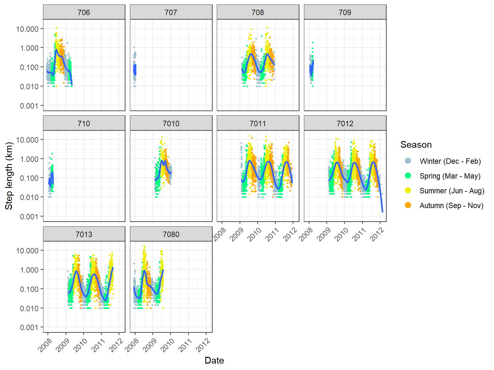

Muskox Movement Patterns
In this document, we will examine patterns in the movement behaviours of collared muskoxen. We will use muskox speed and turning angles to explore behaviour.
Movement Trends
Based on the time series above, movement tends to be highest in the summer (June, July, August), gradually decrease during autumn (September, October, November) and winter (December, January, February) and experience a sharp increase in the late spring (May). Perhaps this increase is timed with parturition, which has been found to start in April/May (Adamczewski 1997). Alternatively, this could be tied to the timing of snowmelt. We can explore this further by looking at average seasonal step lengths for each muskox:
Step lengths in the winter and spring are similar, whereas autumn step lengths are intermediate between winter and summer. This again highlights the discrepancy between the gradual decrease in step lengths from summer to winter compared with the sharper increase from winter to summer.
For the most part, average seasonal step lengths are consistent between muskoxen, though there appear to be greater variation in the spring and autumn. To examine this further, let’s plot smoothed curves of step lengths against day of year for different years. We’ll restrict this plot to muskoxen-year combinations with more than half a year’s worth of data:
The curves of step lengths follow similar trajectories but there is still considerable variation across years and among muskoxen. This suggests weather, landscape, and muskox characteristics may play a part in influencing movement behaviour.
Movement behaviour in spring may be related to calving. Previous studies in Greenland have shown that muskoxen benefit from earlier spring green-up (Eikelenboom et al., 2021), so muskoxen may be able to alter their movement behaviour depending on green-up timing. In 2008 and 2009, surveys were flown to relocate collared muskoxen to see if they were accompanied by calves. We can plot these data on graphs of step lengths in the spring to investigate how approximate calving dates impact movement.

Comparing the graphs of muskoxen that were observed to be accompanied by a calf to those that were not, there does not appear to be a major difference in the general trend for step lengths. 7013 in 2009 is the only trajectory to show a sudden decrease in step lengths that resembles those used to determine calving dates for caribou (Bonar et al., 2018; DeMars et al., 2013), but this signal is not present for any of the other muskoxen. For most muskoxen, there is a marked increase in step length in mid-May, but this does not appear to be related to calving dates. The survey data shows that in almost all spring surveys (April onwards), the collared muskoxen were in groups consisting of other females with calves. Only 7010 in 2009 was in a group that wasn’t observed to contain calves until the June survey. I am not sure if these observations
Net Squared Displacement
We can also look at net squared displacement curves to investigate movement patterns of muskoxen (i.e. resident, migratory, or nomadic). See Bunnefeld et al. (2011) for examples of how these curves look for different movement classes (i.e. migrant, disperser, resident, nomad).
To do this we will use the adehabitatLT package to format our data and the migrateR package to fit different models to the net displacement data. Let’s first get our collar data into the trajectory format used by adehabitatLT. We will also subset our data to one observation per day to improve modelling efficiency.
musk_collar_sub <- musk_collar_filt %>%
filter(lubridate::hour(datetime) == 16)
xy <- musk_collar_sub %>%
sf::st_transform("+proj=utm +zone=9") %>%
sf::st_coordinates()
ltraj <- adehabitatLT::as.ltraj(xy = xy, date = musk_collar_sub$datetime, id = musk_collar_sub$Id_Number)
adehabitatLT::ld(ltraj) %>%
ggplot(aes(x = date, y = R2n)) +
geom_point(size = 0.5) +
geom_line() +
ylab("Net squared displacement (km^2)") +
facet_wrap(~id, scales = "free") +
theme_bw() +
theme(axis.text.x = element_text(angle = 45, vjust = 1, hjust=1))
The plot above shows the net squared displacement from the initial location for each collared muskoxen. There does not appear to be a clear movement behaviour shared between all muskoxen. Most appear to have short periods of time during the summer with large net squared displacement, but these are generally followed by longer periods where net squared displacement is much smaller. Muskoxen 7011 and 7012 show a general increasing trend in net squared displacement, but there are still extended periods of smaller displacement throughout the time series. Most of the periods of larger displacement do not appear to be long enough to represent a separate summer range. Examinations of animations of muskox movements generally show that they tend to move between patches of resources during the summer rather than sticking to one specific area.